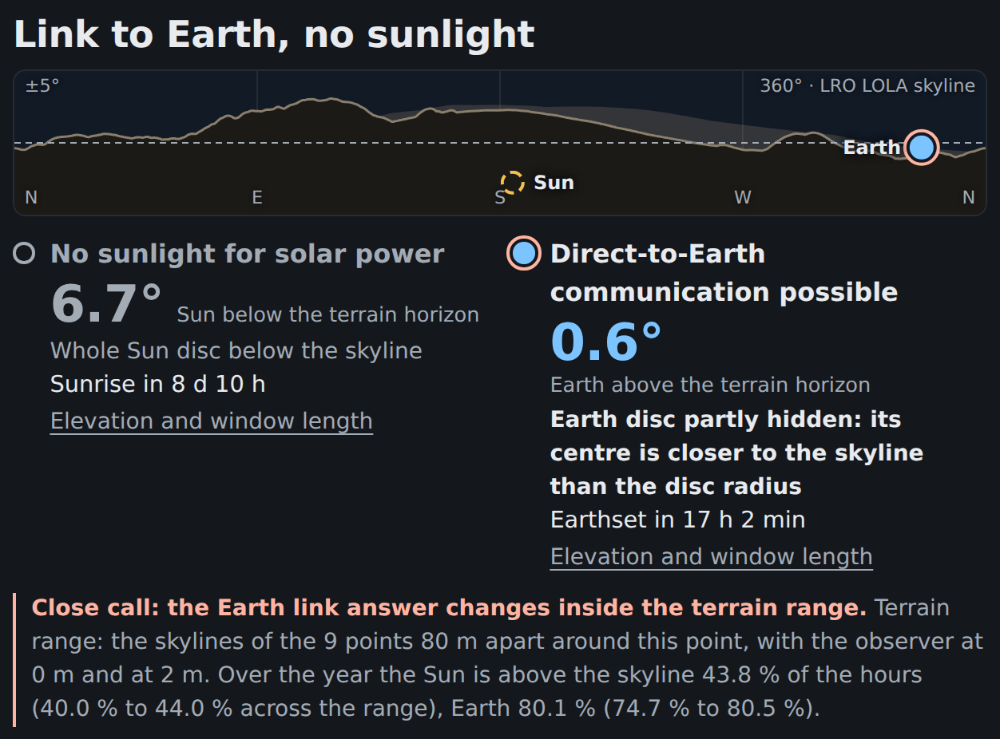

NASA Space Apps Challenge 2026 · Jakarta (virtual)

Still in View
Launch slipped or site changed? See at once whether a lunar landing site still has sunlight for power and a direct line to Earth.
It says when an answer is not certain. An answer that would change within 80 m is marked on the card, and the terrain skyline matches NASA's PGDA maps within 0.1 percentage points at IM-1 and IM-2.
One kilometre can decide. At the IM-2 site Earth's centre is above the skyline 80.1 % of the year, and 64.4 % one kilometre east.
Challenge: Lunar Landing Site Navigator · Team: Aiman Malib · Member: Muhammad Aiman Bin Malib

Try it: aimanmalib.github.io/spaceapps26 · Code: github.com/aimanmalib/spaceapps26 · Images: real screenshots of the app, and one NASA photo.1 / 7